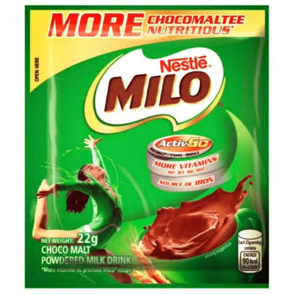
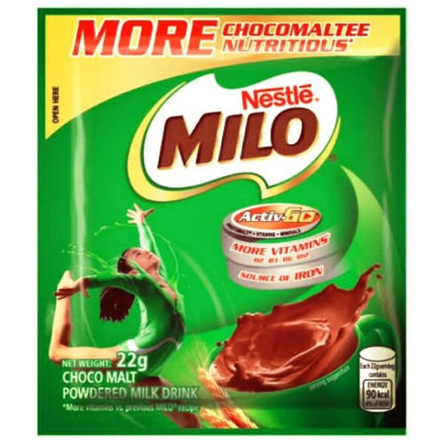

Budget Mocha coffee to start your day!
 

A simple yet effective budget friendly way to enjoy coffee sticks better
Coffee is drank by many before doing anything productive, but when we try to save money, coffee doesn't hit the same. Well atleast stick coffe won't. I made this recipe because I wanted to drink coffee, but need a sweet flavor to accompany the bitterness
Ingredients
- 1 piece coffee stick
- 1 sachet of milo
- hot water and cold water
How to breww
- pour 1 coffee stick into mug and at a lil bit of cold water(just enough to mix it) this is so that the drink won't be as bitter *Trust me bro*
- pour in 1 sachet of milo into the same mug and mix
- fill the mug with hot water, but not completely and SIP ON IT LIKE YOU MEAN IT